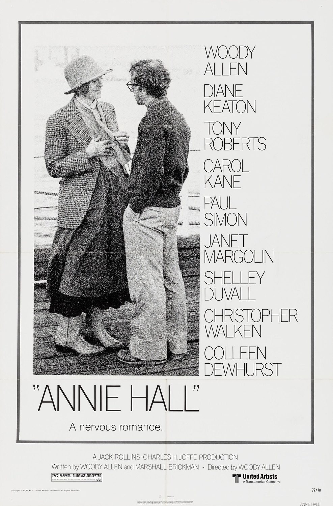

Fiche technique

Synopsis
Alvy Singer, humoriste juif new-yorkais anxieux et hypocondriaque, revient sur sa relation avec Annie Hall, une chanteuse originaire du Wisconsin, à la fois candide et en pleine construction d'elle-même. À travers des allers-retours dans le temps, le film retrace la rencontre du couple, ses moments de complicité, ses tensions, jusqu'à la séparation — qu'Alvy tente inlassablement de comprendre en s'adressant directement au spectateur.
Contexte de production
Annie Hall marque un tournant dans la carrière de Woody Allen. Après une série de comédies plus proches du burlesque (Bananas, Woody et les Robots), il amorce ici un cinéma plus introspectif, nourri par le cinéma européen — Bergman et Fellini sont des références revendiquées. Le scénario, coécrit avec Marshall Brickman, s'est considérablement transformé au montage : le projet initial, plus proche du thriller psychologique centré sur Alvy, a été resserré autour de l'histoire d'amour avec Annie, personnage largement façonné par la présence et la sensibilité de Diane Keaton, alors compagne du réalisateur à la ville.
Le titre original du personnage de Keaton était d'ailleurs son propre nom de famille — elle est née Diane Hall, surnommée « Annie » dans son entourage — ce qui souligne combien le film puise dans une matière autobiographique sans jamais s'y réduire complètement.
Structure narrative
Le film abandonne la linéarité classique au profit d'une mémoire subjective et fragmentée. Alvy raconte son histoire comme on raconte une blague qui a mal tourné : il commence par la fin, revient en arrière, s'interrompt, se corrige. Cette structure en flash-back n'est pas un simple procédé de montage, elle incarne la manière dont un esprit anxieux rejoue et réécrit sans cesse le passé pour tenter d'en localiser la faille.
Le film s'ouvre sur un monologue direct à la caméra où Alvy cite une blague de Groucho Marx sur les clubs qui n'accepteraient jamais quelqu'un comme lui pour membre — posant d'emblée le thème central de l'autosabotage relationnel avant même l'apparition d'Annie à l'écran.
Mise en scène et procédés
Allen multiplie les ruptures avec le langage cinématographique conventionnel, faisant du film une sorte de manifeste formel sur les limites du récit romantique classique.


L'adresse directe au spectateur
Alvy s'adresse régulièrement à la caméra, commente l'action en train de se dérouler, va jusqu'à interpeller les passants dans la rue pour leur demander leur avis sur son couple. Ce dispositif, hérité de la tradition du stand-up, transforme le spectateur en confident et en témoin, tout en maintenant une distance ironique vis-à-vis du récit.
Le split screen et la simultanéité
La scène où Alvy et Annie consultent chacun leur psychanalyste, filmée en écran divisé, matérialise littéralement l'écart de perception entre les deux personnages : l'un juge leur vie sexuelle insuffisante, l'autre la trouve excessive.
Les sous-titres de la pensée
Lors du premier vrai échange entre Alvy et Annie sur la terrasse, des sous-titres révèlent leurs pensées réelles sous leurs propos mondains — un contrepoint qui expose le fossé entre ce que l'on dit et ce que l'on pense dans les débuts d'une relation.
L'animation et le fantastique
Une séquence animée transforme Alvy en personnage de dessin animé face à une Blanche-Neige inversée, incarnation de son ex-femme. Ailleurs, le jeune Alvy adulte peut littéralement s'adresser à son enfance ou faire irruption dans une salle de classe du passé — le film s'autorise toutes les libertés dès lors qu'elles servent l'expression d'un état intérieur.
Alvy et Annie
Alvy Singer
Double à peine voilé de Woody Allen lui-même, Alvy est défini par une anxiété permanente, un pessimisme revendiqué et une propension à intellectualiser jusqu'à l'absurde chaque situation. Son humour est une défense autant qu'une arme : il désamorce l'intimité au moment même où elle devient possible.
Annie Hall
Annie constitue le véritable centre gravitationnel du film. Loin d'être un simple objet du désir d'Alvy, elle est montrée dans sa trajectoire propre : son insécurité initiale, ses tenues empruntées à la garde-robe masculine devenues iconiques, sa passion pour le chant, son désir d'indépendance qui la conduit finalement à quitter New York pour Los Angeles — géographie qu'Alvy exècre. Le film prend soin de suggérer que la relation échoue moins par manque d'amour que parce que les deux trajectoires personnelles divergent.
« Une relation, je pense, c'est comme un requin. Il faut qu'elle avance sans arrêt, sinon elle meurt. Et je crois que ce qu'on a là, c'est un requin mort. » — Alvy Singer
Thèmes
| Thème | Traitement dans le film |
|---|---|
| Amour et incompatibilité | Le couple n'échoue pas sur un désamour brutal, mais sur l'usure et la divergence progressive de deux trajectoires de vie. |
| Anxiété existentielle | Alvy est hanté, depuis l'enfance, par la finitude et l'absurdité de l'existence — un mal-être présenté comme comique et sincère à la fois. |
| New York contre Los Angeles | New York incarne la névrose stimulante et l'intellect ; Los Angeles, la platitude ensoleillée. Ce clivage géographique double la rupture amoureuse. |
| La mémoire comme récit | Le film interroge la fiabilité du souvenir : on ne revit pas le passé, on le reconstruit pour se l'expliquer à soi-même. |
Le film se referme sur une image devenue célèbre : Alvy compare l'amour à une vieille blague sur un homme qui prétend que son frère se croit une poule — « je garderais bien mon frère loin de la poule, mais j'ai besoin des œufs ». C'est ainsi qu'il définit la relation humaine en général : absurde, coûteuse, et pourtant indispensable.
Réception et postérité
À sa sortie, Annie Hall surprend en battant Star Wars pour l'Oscar du meilleur film en 1978, un choix resté célèbre pour son apparent contraste avec le blockbuster de George Lucas sorti la même année. Le film obtient également les Oscars du meilleur réalisateur, du meilleur scénario original et de la meilleure actrice pour Diane Keaton.
Au-delà des récompenses, le film a durablement influencé le genre de la comédie romantique, en installant une figure de narrateur intellectuel, névrosé et digressif que l'on retrouvera chez de nombreux cinéastes et séries ultérieures. Le style vestimentaire d'Annie — chemise, gilet, cravate lâche, pantalon large — est devenu une référence de mode à part entière, popularisant une silhouette androgyne bien au-delà du cinéma.
Conclusion
Annie Hall tient sa force de son refus d'offrir une histoire d'amour résolue. En choisissant de raconter un échec plutôt qu'une réussite sentimentale, et en assumant des ruptures formelles constantes — adresse au public, animation, split screen, sous-titrage des pensées — Woody Allen construit un film qui parle autant de la difficulté d'aimer que de la difficulté de raconter cette difficulté. C'est cette lucidité, mêlée d'autodérision, qui explique pourquoi le film continue d'être regardé, cité et étudié près de cinquante ans après sa sortie.
Sources
Aucune source primaire n'a été consultée pour la rédaction de ce texte : le contenu ci-dessus repose sur les connaissances générales acquises par le modèle Claude pendant son entraînement, sans vérification documentaire dédiée à cette analyse. Les dates, citations et détails de production n'ont donc pas été recoupés avec des sources vérifiables et peuvent contenir des imprécisions.
- Aucune source consultée — analyse en attente de révision sourcée.